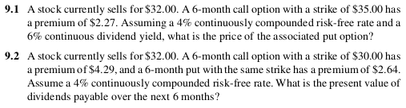

Chapter 9 - Parity and Other option relationship
Put-call parity
For European options with the same strike price and time to expiration the parity relationship is
\[ C - P = PV(\text{forward price} - X) \]
\[ S + P = \frac{X}{(1 + r)^T} + C \]
\[ \frac{F_0(T)}{(1 + r)^T} + P = \frac{X}{(1 + r)^T} + C \]
Intuition
buying a call and selling a put with the strike equal to the forward price (\(F_0(T) = K\)) creates a synthetic forward contract and hence must have a zero price
Parity for options on stocks
If underlying asset is a stock and \(PV_{0, T}(Div)\) is the present value of the dividends payable over the life of the option, then \(e^{-rT}F_{0, T} = S_0 - PV_{0, T}(Div)\), therefore
\[ C(K, T) = P(K, T) + [S_0 - PV_{0, T}(Div)] - e^{-rT}(K) \]
rewriting above
\[ S_0 = C(K, T) - P(K, T) + PV_{0, T}(Div) + e^{-rT}(K) \]
For index options, \(S_0 - PV_{0, T}(Div) = S_0 e^{-\delta T}\), therefore
\[ C(K, T) = P(K, T) + S_0 E^{-\delta T} - PV_{0, T}(K) \]

Synthetic security creation using parity
- synthetic stock - buy call, sell put, lend PV of strike and dividends
- synthetic T-bill - buy stock, sell call, buy put (conversion)
- synthetic call - buy stock, buy put, borrow PV of strike and dividends
- synthetic put: sell stock, buy call, lend PV of strike and dividends
Generalized parity relationship

Properties of option prices
European versus American options
- Since an American option can be exercised at anytime, whereas a European option can only be exercised at expiration, an American option must always be at least as valuable as an otherwise identical European option.
\[ C_{American}(S, K, T) \geq C_{European}(S, K, T) \]
\[ P_{American}(S, K, T) \geq P_{European}(S, K, T) \]
Maximum and minimum option prices
call price cannot
- be negative
- exceed stock price
- be less than price implied by put-call parity using zero for put price:
\[ S > C_{American}(S, K, T) \geq C_{European}(S, K, T) \geq max[0, PV_{0, T}(F_{0, T}) - PV_{0, T}(K)] \]
put price cannot
- be more than the strike price
- be less than price implied by put-call parity using zero for put price:
\[ K > P_{American}(S, K, T) \geq P_{European}(S, K, T) \geq max[0, PV_{0, T}(K) - PV_{0, T}(F_{0, T})] \]
Early exercise for American options
An American call option on a non-dividend-paying stock should not be exercised early, because
\[ C_{Amerian} \geq C_{European} \geq S_T - K \]
That means, one would lose money be exercising early instead of selling the option.
If there are dividends, it may be optimal to exercise early, just prior to a dividend.
It may be optimal to exercise a non-dividend-paying put option early if the underlying stock price is sufficiently low.
Time to expiration
An American option (both put and call) with more time to expiration is at least as valuable as American option with less time to expiration. This is because the longer option can easily be converted into the shorter option by exercising it early.
A European call option on a non-dividend-paying stock will be more valuable than an otherwise identical option with less time to expiration.
European call options on dividend-paying stock and European puts may be less valuable than an otherwise identical option with less time to expiration.
When the strike price grows at the rate of interest, European call and put prices on a non-dividend-paying stock increases with time to maturity.
option convexity